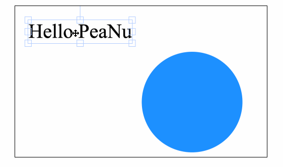
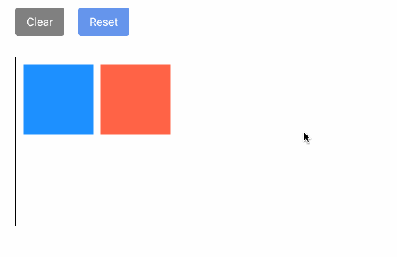

讓你的 canvas 更靈活。
什麼是 fabric？
fabric 是一個 Canvas 的套件，他可以讓 Canvas 中的內容變得更具有互動性，像這樣：

附註：CodePen
這段功能只需要這樣的原始碼就可以實現：
1
2
3
4
5
6
7
8
9
10
11
12
13
14
15
16
17
18
19
20
21
22
23
24
25
| function App() {
const canvasEl = useRef<HTMLCanvasElement>(null)
useEffect(() => {
const canvas = new fabric.Canvas(canvasEl.current)
const text = new fabric.Text('Hello PeaNu')
const circle = new fabric.Circle({ fill: 'dodgerblue', radius: 100 })
canvas.add(text, circle)
}, [])
return (
<div className='App'>
<canvas
ref={canvasEl}
width='500'
height='300'
style={{ border: '1px solid black' }}
></canvas>
</div>
)
}
|
關於背後的原理
其實 fabric 的原理簡單來說就是用一個「新的 canvas 來包住原本的 canvas」，有點像是代理的感覺。當你想對 canvas 做任何操作時，都是先跟 fabric 說，fabric 在幫你做對應的處理。
所以在用 fabric 的時候通常都是我們給他一些資訊（例如：物件），接著 fabric 就會利用這些資訊來對 canvas 做處理。
如果想瞭解更多的話建議閱讀官網上的 Tutorial，裡面能學到大部分的基礎概念。
事件
fabric 有提供對應的事件可以監聽，像是常見的點擊，選取都可以透過特定的「名稱」來綁定，這邊介紹幾個比較常用到的：
mouse:down 點擊當下觸發（可想成 click）mouse:move 當 hover 的時候觸發mouse:up 點擊以後觸發（鬆開滑鼠鍵）after:render 渲染完畢後觸發before:selection:cleared 取消選取之前觸發selection:cleared 取消選取之後觸發selection:created 選取後觸發（單個或多個都適用）object:moving 當移動物件時觸發（連續）object:selected 物件被選取時觸發（已棄用）
附註：後來發現這些事件名稱如果是給「物件」用的話，名稱會有一點不同，像 mouse:down 會變成 mousedown，所以如果遇到沒反應的問題，很有可能是你事件名稱寫錯的關係 QQ
附註：只要有 object 這個前綴基本上就是針對 canvas 中的「物件」來做監聽。
來一個簡單的範例：
1
2
3
4
5
6
7
8
9
10
11
12
13
14
15
16
17
18
19
20
21
22
23
24
| function App() {
const canvasEl = useRef<HTMLCanvasElement>(null)
useEffect(() => {
const canvas = new fabric.Canvas(canvasEl.current)
const circle = new fabric.Circle({ fill: 'dodgerblue', radius: 100 })
canvas.add(circle)
canvas.on('mouse:down', (option) => {
console.log('event', option.e)
console.log('target', option.target)
})
}, [])
return (
<div className='App'>
<canvas
ref={canvasEl}
width='500'
height='300'
style={{ border: '1px solid black' }}
></canvas>
</div>
)
}
|
附註：CodePen
當 callback 觸發時會接收一個 option 物件，主要的內容是：
option.e 原生的 JS event 物件option.target 觸發該事件的那個主要物件（通常叫做 Klass）
另外像 object:moving 這種事件也可以綁定在「物件」上，不一定要直接綁在 canvas 實例上，像這樣：
1
2
3
4
5
6
7
8
9
10
11
12
13
14
15
16
17
18
19
20
21
22
23
24
25
| function App() {
const canvasEl = useRef<HTMLCanvasElement>(null)
useEffect(() => {
const canvas = new fabric.Canvas(canvasEl.current)
const circle = new fabric.Circle({ fill: 'dodgerblue', radius: 100 })
canvas.add(circle)
circle.on('moving', (option) => {
console.log('event', option.e)
console.log('target', option.target)
})
}, [])
return (
<div className='App'>
<canvas
ref={canvasEl}
width='500'
height='300'
style={{ border: '1px solid black' }}
></canvas>
</div>
)
}
|
附註：CodePen
綜合範例
在知道大概有哪些事件可以用之後，就可以做出簡單的清除功能：

這邊的思路還直覺的，就是：
- 當選取物件時，更新 state 讓 clear 按鈕可以點選
- 若取消選取，則更新 state 禁用 clear 按鈕
- 最後按下 clear 按鈕時，透過
getActiveObject 來取得目前被選取的物件並用 remove 來移除
有興趣可以到 Codepen 上參考。
怎麼對 Group 起來後的子元素事件監聽？
我當初試過這幾種方法，但都沒效：
- 直接對子元素設置監聽器（事件會沒效）
- 想透過 option.e.target 來取得觸發的子元素（只會取到 group）
後來參考了這篇才解決，簡單來說就是要在建立 group 的時候把 subTargetCheck 設為 true，接著事件發生時就可以透過 option.subTargets[0] 來存取該真正的那個目標。
更好用的繪圖功能
雖然在之前有實作過如何用原生的 canvas 來實現繪製功能，但用 fabric 可以更輕鬆且畫出更滑順的線條，直接來看範例吧：
1
2
3
4
5
6
7
8
9
10
11
12
13
14
15
16
17
18
19
20
21
22
23
24
25
26
27
28
29
30
31
32
33
34
35
36
37
38
39
40
41
42
43
44
45
46
47
48
49
50
51
52
53
54
55
56
| function App() {
const canvasEl = useRef<HTMLCanvasElement>(null)
useEffect(() => {
canvasEl.current = new fabric.Canvas('orig-canvas')
const brush = new fabric.PencilBrush(canvasEl.current)
canvasEl.current.freeDrawingBrush = brush
canvasEl.current.freeDrawingBrush.width = 5
canvasEl.current.isDrawingMode = true
return () => {
const data = canvasEl.current.dispose()
}
}, [])
function swicher(type: 'brush' | 'erase') {
switch (type) {
case 'brush':
const brush = new fabric.PencilBrush(canvasEl.current)
canvasEl.current.freeDrawingBrush = brush
canvasEl.current.freeDrawingBrush.width = 5
canvasEl.current.isDrawingMode = true
break
case 'erase':
const erase = new fabric.EraserBrush(canvasEl.current)
canvasEl.current.freeDrawingBrush = erase
canvasEl.current.freeDrawingBrush.width = 10
canvasEl.current.isDrawingMode = true
break
default:
break
}
}
return (
<div className='App'>
<div className='options'>
<button onClick={() => swicher('brush')}>Brush</button>
<button onClick={() => swicher('erase')}>Erase</button>
</div>
<canvas
id='orig-canvas'
width='500'
height='300'
style={{ border: '1px solid black' }}
></canvas>
</div>
)
}
|
附註：橡皮擦功能並沒有內建在 fabric 中，必需引入額外的模組才行，詳細可參考官方說明。
這樣就有一個畫畫跟橡皮擦的功能囉！而且用起來更滑順，可以去底下範例去實際玩玩看就能感受到差異了：
實作 PDF 簽名功能
這邊只解釋思路，剩下的就麻煩各位看 code 和註解了。
把 PDF 顯示到 canvas 上的流程：
- 使用者點擊「上傳檔案」時，讀取檔案內容並轉換成 base64 格式
- 產生一個 canvas 元素，並把轉成 base64 格式的檔案丟給 Pdfjs 處理後塞進去裡面
- 利用 fabric 把 canvas 元素（那個 PDF）轉成 img 後丟渲染到真正要顯示在畫面上的 canvas
簽名的流程：
- 使用者點擊「Signature」，彈出 Modal 後把裡面的 canvas 開啟繪圖功能
- 使用者簽好名後按下「Save」，把簽名的部分利用 fabric 轉換圖片，接著在插入到畫面上那個 canvas 中（顯示 PDF 內容的那個）
這邊會比較亂的地方就是有各種 canvas 和資料轉換的流程，所以可能還是要搭配原始碼來讀會比較好理解一點：
1
2
3
4
5
6
7
8
9
10
11
12
13
14
15
16
17
18
19
20
21
22
23
24
25
26
27
28
29
30
31
32
33
34
35
36
37
38
39
40
41
42
43
44
45
46
47
48
49
50
51
52
53
54
55
56
57
58
59
60
61
62
63
64
65
66
67
68
69
70
71
72
73
74
75
76
77
78
79
80
81
82
83
84
85
86
87
88
89
90
91
92
93
94
95
96
97
98
99
100
101
102
103
104
105
106
107
108
109
110
111
112
113
114
115
116
117
118
119
120
121
122
123
124
125
126
127
128
129
130
131
132
133
134
135
136
137
138
139
140
141
142
| function App() {
const { isOpen, onOpen, onClose } = useDisclosure()
const canvasPdf = useRef<any>(null)
const canvasSignature = useRef<any>(null)
useEffect(() => {
canvasPdf.current = new fabric.Canvas('canvas-pdf')
return () => {
canvasPdf.current.dispose()
}
}, [])
function readBlob(blob: Blob): Promise<string> {
return new Promise((resolve, reject) => {
const fileReader = new FileReader()
fileReader.addEventListener('load', () => resolve(fileReader.result as string))
fileReader.addEventListener('error', () => reject('read blob failed'))
fileReader.readAsDataURL(blob)
})
}
async function getPdfCanvas(file: File) {
const base64 = await readBlob(file)
const data = atob(base64.substring(base64Prefix.length))
const pdfDoc = await getDocument({ data }).promise
const pdfPage = await pdfDoc.getPage(1)
const viewport = pdfPage.getViewport({ scale: window.devicePixelRatio })
const canvasElement = document.createElement('canvas')
const context = canvasElement.getContext('2d')!
canvasElement.height = viewport.height
canvasElement.width = viewport.width
await pdfPage.render({
canvasContext: context,
viewport
}).promise
return canvasElement
}
async function onFileSelect(event: React.ChangeEvent<HTMLInputElement>) {
const file = event.target.files![0]
if (!file) return
await getPdfCanvas(file).then((element) => {
const scale = 1 / window.devicePixelRatio
const img = new fabric.Image(element, {
scaleX: scale,
scaleY: scale
})
canvasPdf.current.requestRenderAll()
canvasPdf.current.setWidth(img.width! / window.devicePixelRatio)
canvasPdf.current.setHeight(img.height! / window.devicePixelRatio)
canvasPdf.current.setBackgroundImage(img, canvasPdf.current.renderAll.bind(canvasPdf.current))
})
}
function onSave() {
const imgSrc = canvasSignature.current.toDataURL({ format: 'png' })
fabric.Image.fromURL(imgSrc, (img) => {
img.left = 200
img.top = 200
img.scaleX = 0.5
img.scaleY = 0.5
canvasPdf.current.add(img)
})
onClose()
}
function onClear() {
canvasPdf.current.remove(canvasPdf.current.getActiveObject())
}
function onModal() {
onOpen()
setTimeout(() => {
canvasSignature.current = new fabric.Canvas('canvas-signature')
const brush = new fabric.PencilBrush(canvasSignature.current)
canvasSignature.current.freeDrawingBrush = brush
canvasSignature.current.freeDrawingBrush.width = 3
canvasSignature.current.isDrawingMode = true
}, 0)
}
return (
<div className='App'>
<input type='file' onChange={onFileSelect} />
<div className='canvas-pdf-wrapper'>
<canvas
id='canvas-pdf'
width='500'
height='300'
style={{ border: '1px solid black' }}
></canvas>
</div>
<div className='options'>
<Button colorScheme='pink' onClick={onClear}>
Clear
</Button>
<Button colorScheme='teal' onClick={onModal}>
Signature
</Button>
</div>
<Modal isOpen={isOpen} onClose={onClose} useInert={false}>
<ModalOverlay />
<ModalContent>
<ModalHeader>Signature</ModalHeader>
<ModalCloseButton />
<ModalBody>
<canvas id='canvas-signature'></canvas>
</ModalBody>
<ModalFooter>
<Button colorScheme='pink' onClick={onClose}>
Close
</Button>
<Button colorScheme='teal' onClick={onSave}>
Save
</Button>
</ModalFooter>
</ModalContent>
</Modal>
</div>
)
}
|
附註：codesandbox，順道一提這邊因為懶得手刻所以套了一下 chakra。
加上刪除按鈕
如果你想要讓每一個物件可以有點 X 來清除的這種功能，可以參考這篇 官方文件。